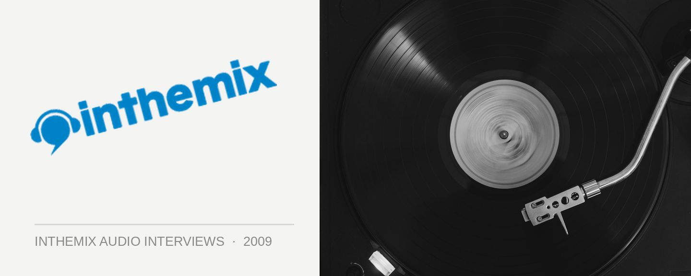

Jack McCord [Audio]: Heading up Hed Kandi
STREAMING AUDIO INTERVIEW
Global house brand Hed Kandi has managed to rise above the ever-fickle trends in dance music, the flavour of the moment might change day-to-day from funky, deep, electro to tech, but Hed Kandi is still just all about ‘house’. It’s had a consistent presence in Australia for a while now, with plenty of one-off parties and mix compilations in the record stores, but with veteran DJ/producer Jack McCord at the helm as the local ‘brand manager’, Hed Kandi will be stepping things up shortly.
“We’re putting a lot of effort into relaunching, and we’ve got a lot of stuff happening, not just in Sydney but right around the country,” Jack told ITM. The first step will be the launch of a ‘limited season’ residency at Favela in Sydney, kicking off this Friday night with Jack playing both the opening and closing sets for the evening, which will continue over the next six weeks. “We like to keep it special, it’s an unusual thing for us to do weekly events like this, but we’re really going all out.”
Soulful, funky house is still pivotal to the Hed Kandi sound, but according to Jack, that hasn’t stopped them from moving with the times. “If you ask me what I play, I can put it into three words – ‘big room house music’,” Jack told ITM. “The music that you hear is quite different to what we were playing in 2003. We’ve kept with the times, while still retaining the essence of what Hed Kandi is.”
ITM’s Angus Paterson talks to Jack McCord about relaunching the Hed Kandi brand across the country, and giving us something warm to look forward to in the cold winter months.
Hed Kandi comes to Favela in Kings Cross, Sydney this Friday June 19th for a limited six-week season. Keep an eye out for more events across Australia…
Friday August 21st – King Street, Newcastle
Sunday August 30 – Motel Nightclub, Melbourne
Second Sunday every month – Beach House Sunday Sessions, Magnetic Island